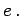

Inhalt Index DeskTop Bronstein

 Algebra und Diskrete Mathematik Algorithmen der Graphentheorie Grundbegriffe und Bezeichnungen
Algebra und Diskrete Mathematik Algorithmen der Graphentheorie Grundbegriffe und Bezeichnungen


Ist G=(V,E) ein Graph und f eine Abbildung, die jeder Kante eine reelle Zahl zuordnet, so heißt (V,E,f) ein bewerteter Graph und f(e) die Bewertung oder Länge der Kante 
In vielen Anwendungsfällen repräsentieren die Bewertungen der Kanten Kosten, die durch den Bau, die Aufrechterhaltung oder die Benutzung der Verbindungen zustandekommen.